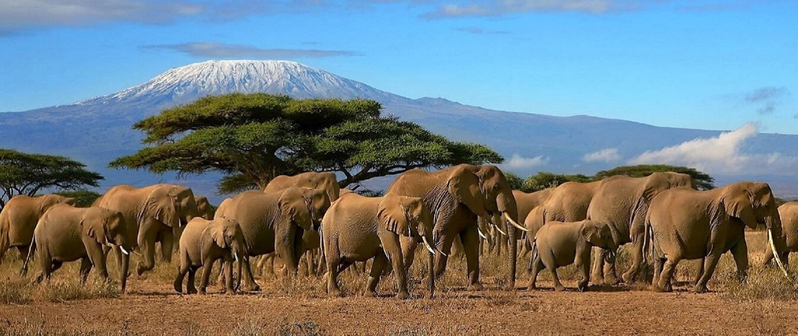

East Africa Travel is delighted to get you practical information to inspire your next trip. Check out our preview stories and be inspired to tour East Africa
Experience the great wildebeest migration in the Maasai Mara on air or Road Safari A popular sight to be observed between the months of July and October is the annual migration of wildebeest, zebra, and Thomson’s gazelle to and from the Serengeti. Leopards, lions and cheetahs can also be observed in the area. The untouched landscape is perfect for wildlife to flourish and human numbers given access to the area is limited. All this combined makes safari excursions to the Maasai Mara National Reserve an exceptional and unforgettable experience.

Like a pearl, Uganda is small but precious – its luster is the bright greens of Africa’s highest mountains, spectacular waterfalls, thick forests, and dramatic valleys. But the beating heart of Uganda is its parks – the best locations for trekking to and viewing the rare mountain gorilla which makes up almost half of all the mountain gorillas in the world
But Uganda is not all monkey business, at reserves like Kibale Forest and Queen Elizabeth Park you’ll experience animals usually seen on the savannah such as giraffes, lions, buffaloes, and elephants

Explore the blue-green marvel of the Ngorongoro Crater, known as the 8th wonder of the world and home to 25,000 animals. Visit the alpine rainforests and perharps a canoe safari in Arusha National Park. Also dont miss out on the elephants over 3000 of them in Tangarine National Park.
Ecerything about Tanzania is epic, snow-caped Mt. Kilimanjaro, the tallest peak in Africa.